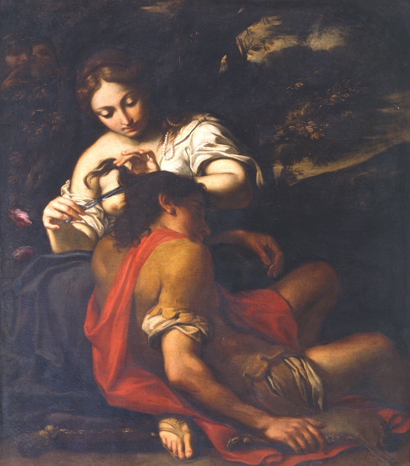

Autore: Carlo Cignani
Titolo: Sansone e Dalila
Data: 1675–1680
Tecnica: Olio su tela
Dimensioni: cm 131 × 113
Provenienza: Collezione Zambeccari
Collocazione attuale: Bologna, Pinacoteca Nazionale, Palazzo Pepoli
Inventario:434
L’opera raffigura l’episodio biblico di Sansone e Dalila, interpretato da Cignani con eleganza e intensità drammatica. Eseguito intorno al 1675–1680, il dipinto era originariamente parte della collezione Zambeccari e oggi si conserva alla Pinacoteca Nazionale di Bologna.